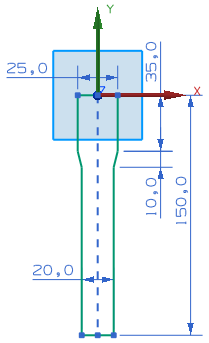
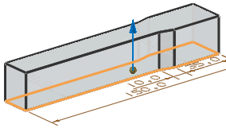

Create and extrude the basic shape
-
Sketch the shape shown below on the X-Y plane of the Datum CSYS.

-
Click Extrude
 .
.
-
Select the sketch.
-
In the Extrude dialog box, type 0 in the Start Distance box and 25 in the End Distance box.
-
Click OK.
